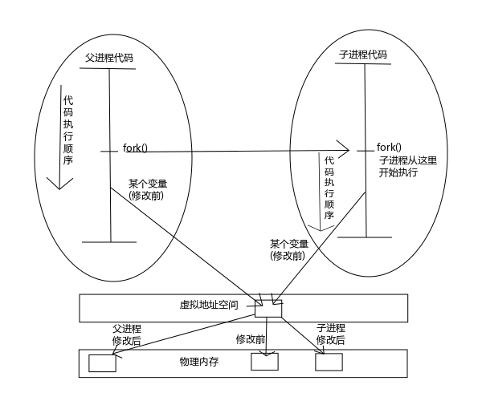

进程控制
本章介绍Unix的进程控制： 创建新进程、执行程序和进程终止 进程的实际、有效和保存的用户和组ID 解释器文件和system函数 进程会计机制
进程标识
每个进程都有一个 非负整型 的 唯一 进程ID。因为进程ID标识符总是唯一的，常将其用做 其他标识符的一部分 以保证其唯一性：
- ID 0进程： 调度 进程，它是 内核 进程，用来执行 进程管理 ，也被称为交换进程
- ID 1进程：通常是 init 进程，在boot过程结束时由内核调用 /sbin/init ：
- 读与系统有关的初始化文件(/etc/rc*文件)
- 将系统引导到一个状态(例如多用户)
- init进程决不会终止，它是一个 普通的用户 进程(不是内核中的系统进程)，但是它以 超级用户特权 运行
对于x86的CPU架构来说，所谓的内核进程实际上指的是保护模式的特权级，这是硬件层面的保护措施： 调度进程运行在保护模式的特权级0上，init进程运行在保护模式的特权级3上
除了进程ID每个进程还有一些其他标识符，下列函数返回这些标识符：
#include <sys/types.h> #include <unistd.h> /** * 获得调用进程的进程ID * * 返回: 调用进程的 进程ID * */ pid_t getpid(void); /** * 获得调用进程的父进程ID * * return: 调用进程的 父进程ID * */ pid_t getppid(void); /** * 获得调用进程的 实际用户ID * * return: 调用进程的 实际用户ID * */ uid_t getuid(void); /** * 获得调用进程的 有效用户ID * * return: 调用进程的 有效用户ID * */ uid_t geteuid(void); /** * 获得调用进程的实际组ID * * return: 调用进程的 实际组ID * */ gid_t getgid(void); /** * 获得调用进程的有效组ID * * return: 调用进程的有效组ID * */ gid_t getegid(void);
这些函数都没有出错返回！
进程生命周期
创建进程
fork
fork ： 创建新进程 的唯一方法
(除了上面提到的那些特殊进程，它们是内核启动时候以特殊方式创建的)
#include <unistd.h> #include <unistd.h> /** * 创建新进程 * * return: 子进程返回 0，父进程返回 子进程的ID，出错返回 -1 * */ pid_t fork(void);
由 fork创建的新进程 被称为 子进程 。因为子进程和父进程都会继续执行fork之后的指令，所以该函数虽然被调用一次，但却会返回两次结果。两次返回的区别是 子进程的返回值是0 ，而 父进程的返回值则是新子进程的进程ID ：
- 将子进程ID返回给父进程的理由是： 一个进程的子进程可以多于一个 ，没有一个函数可以使一个进程获得其所有子进程的进程ID。如果接下来 父进程要使用子进程ID ，那么 只能在fork后记录返回的子进程ID
- fork使子进程得到返回值0的理由是：
- 进程ID为0总是由调度/交换进程使用， 一个子进程的进程ID不可能为0 ，所以可以 通过fork的返回结果来判断是不是子进程
- 一个进程 只会有一个父进程 ， 子进程可以调用 getppid 以获得其父进程的进程ID ，所以没有必要去返回父进程的ID
子进程的进程环境
子进程是父进程的复制品：
- 如果正文段是 只读的 ，则父、子进程 共享正文段
- 获得父进程的 复制品 ：
- 数据段
- 非初始化数据段(bss)
- 堆
- 栈
注意：数据段，bss， 堆，栈是子进程所拥有的独立拷贝 父、子进程并不共享这些存储空间部分！！！
写时复制
现在很多的实现并不做一个父进程数据段和堆的完全拷贝，因为在 fork 之后经常跟随着 exec 执行另外一个程序 而作为替代使用了在写时复制(Copy-On-Write)的技术
例如：
- fork函数刚刚创建子进程的时候，父、子进程的数据 指向同一块物理内存 ，但是内核将这些 内存的访问变为只读 的了
- 当父、子进程中的任何一个想要 修改数据 的时候
- 内核会为 修改区域的那块内存 制作一个 副本
- 并将自己的 虚拟地址 映射到 物理地址 的指向修改为 副本的地址
从此父子进程互不干扰，效率也提高了许多。新分配的副本大小通常是 虚拟存储系统中的一个页
]]
fork实例
fork一个进程，修改相关变量并打印
#include <sys/types.h> #include "apue.h" int glob = 6; char buf[] = "a write to stdin\n"; int main(void) { int var; pid_t pid; var = 88; if(write(STDOUT_FILENO, buf, sizeof(buf) - 1) != (sizeof(buf) - 1)) err_sys("write error"); printf("before fork\n"); // we don't flush stdout if( (pid = fork() ) < 0) err_sys("fork error"); else if(0 == pid) { //child process // modify variable glob++; var++; } else { // parent process sleep(2); } //child & parent share code printf("pid = %d, glob = %d, var = %d\n", getpid(), glob, var); exit(0); }
一般来说，在fork之后是 父进程先执行还是子进程先执行是不确定的 ，这取决于内核所使用的 调度 算法
如果要求父、子进程之间相互同步，则要求某种形式的进程间通信 在这个程序中父进程使自己睡眠2秒钟，以此使子进程先执行，但2秒钟并不一定保证已经足够
$ ./src/process/forkExample a write to stdin #终端是行缓存的，所以printf("before fork")直接输出 before fork pid = 8898, glob = 7, var = 89 # 子进程打印改变后的变量值 pid = 8897, glob = 6, var = 88 # 父进程打印未改变的变量值 $ ./src/process/forkExample > temp.out $ cat temp.out a write to stdin #文件是全缓存的，所以fork之前的printf把"before fork\n"放入了缓存，但并没有输出 #fork把父进程的标准IO缓存复制了，因此在最后的prinf("pid= %d ...)也输出了before fork\n before fork pid = 8962, glob = 7, var = 89 #子进程 before fork pid = 8961, glob = 6, var = 88 #父进程
fork与I/O函数之间的关系：
- 文件IO 是 不带缓存 的：所以"a write to stdin"只被write函数写到标准输出一次
- 标准I/O 库是 带缓存 的：如果标准输出连到终端设备，则它是 行缓存 的，否则它是 全缓存 的
- 当以 交互方式 运行该程序时：因为标准输出缓存由新行符刷新，所以"before fork"只被printf输出一次
- 当将 标准输出 重新定向 到 一个文件 时：
- 在fork之前调用了printf("before fork")一次，但 当调用fork时该行数据仍在缓存内
- 在 父进程数据空间 复制 到 子进程 中时该 缓存数据也被复制到子进程 中，于是那时父、子进程各自有了"before fork"的缓存
- 所以当每个进程终止时，其 缓存中的所有内容被写到相应文件中
因此在 fork进程前 请务必考虑 flush 所有的缓存！！！
所有由父进程打开的描述符都被复制到子进程中，父、子进程每个相同的打开描述符共享一个文件表项 所以在上面程序中重定向了父进程的标准输出时，子进程的标准输出也被同样重定向
再比如一个进程打开了三个不同文件，它们是 标准输入 、 标准输出 和 标准出错 。在从fork返回时，有了如图8-1中所示的安排
这种共享文件的方式使 父、子进程对同一文件使用了一个文件位移量
如果父、子进程写到同一描述符文件，但又没有任何形式的同步(例如使父进程等待子进程)，那么它们的输出就会相互混合，但是这种情况并不常见
在fork之后处理文件描述符有两种常见的情况：
- 父进程等待子进程完成 。父进程无需对其描述符做任何处理。当子进程终止后，它曾进行过读、写操作的任一共享描述符的文件位移量已做了相应更新
- 父、子进程各自执行不同的程序段。在fork之后 父、子进程 各自关闭 它们 不需使用 的文件描述符 ，并且不干扰对方使用的文件描述符。这种方法是网络服务进程中经常使用
父、子进程的资源共享
除了打开文件之外，很多父进程的其他性质也由子进程继承:
- 实际用户ID、实际组ID、有效用户ID、有效组ID
- 添加组ID
- 进程组ID
- 对话期ID
- 控制终端
- 设置-用户-ID标志和设置-组-ID标志
- 当前工作目录
- 根目录
- 文件方式创建屏蔽字
- 信号屏蔽和排列
- 对任一打开 文件描述符的在执行时关闭标志
- 环境
- 链接的共享存储段
- 资源限制
父、子进程的区别
- fork的返回值
- 进程ID
- 不同的父进程ID
- 子进程的tms_utime，tms_stime，tms_cutime以及tms_ustime设置为0
- 父进程设置的锁 ，子进程不继承
- 子进程的未决告警 被清除
- 子进程的未决信号集 设置为空集
fork的常见用法
一个父进程希望复制自己，使 父、子进程同时执行不同的代码段
这在网络服务进程中是常见的： 父进程等待委托者的服务请求，当这种请求到达时，父进程调用fork 使子进程处理此请求，父进程则继续等待下一个服务请求
- 一个进程要 执行一个不同的程序 。这对 shell 是常见的情况。在这种情况下，子进程在从 fork 返回后立即调用 exec
某些操作系统将第二种用法中的两个操作(fork之后执行exec)组合成一个，并称其为spawn UNIX将这两个操作分开，因为在很多场合需要单独使用fork，其后并不跟随exec
vfork
vfork ：用于创建一个新进程，而 该新进程的目的是为了exec一个新程序
#include <sys/types.h> #include <unistd.h> /** * 创建新进程，而该新进程是目的是为了exec一个新程序 * * return: 子进程返回 0，父进程返回 子进程的ID，出错返回 -1 * */ pid_t vfork(void);
vfork与fork的不同：
- vfork 并不将父进程的地址空间复制到子进程 中，在 子进程exec之前完全使用父进程的地址空间
这意味着子进程如果修改了某个变量，这个修改对父进程也是可见的！
- vfork保证了 子进程在父进程之前执行 ，父进程会 阻塞运行 直到子进程执行了 exec 或者 exit 函数
如果在调用这两个函数之前子进程依赖于父进程的进一步动作，则会导致“死锁”！！！ 特别是子进程并不继承父进程的记录锁，这时使用父进程打开的文件时可能会被阻塞！！！
vfork实例
改写fork实例
#include "apue.h" // external variable in initialized data int glob = 6; int main(void) { // automatic variable on the stack int var; pid_t pid; var = 88; printf("before fork\n"); if((pid = vfork()) < 0) { err_sys("fork error"); } else if(pid == 0) { //child glob++; // change variable var++; _exit(0); //child terminated //exit(0) } //parent printf("pid = %d, glob = %d, var = %d\n", getpid(), glob, var); exit(0); }
子进程对变量glob和var做加1操作，结果 改变了父进程中的变量值 。因为子进程在父进程的地址空间中运行
$ gcc -I/home/klose/Documents/programming/c/apue/include -c -o vforkExample.o src/process/vforkExample.c #编译c文件，注意不能有优化参数！ $ gcc -o vforkExample vforkExample.o src/lib/libapue.a # 链接静态库文件，产生可执行文件 $ ./vforkExample before fork pid = 19302, glob = 7, var = 89 $ gcc -O2 -I/home/klose/Documents/programming/c/apue/include -c -o vforkExample1.o src/process/vforkExample.c $ gcc -O2 -o vforkExample1 vforkExample1.o src/lib/libapue.a $ ./vforkExample1 #由于优化，var被放在寄存器内，所以丢失了子线程的修改 before fork pid = 19471, glob = 7, var = 88
子进程对变量的改动只对保存在内存中的变量有效，而对寄存器中的变量有可能会回滚 如果编译使用了优化参数，结果可能并不同，为了保证效果可以使用 volatile
因为写时复制技术的普及，实际上 vfork 已经是个 过时的 函数， 尽量避免使用vfork
终止进程
进程有三种正常终止法及两种异常终止法：
- 正常 终止:
- 在main函数内执行 return语句 ，这等效于 调用exit
- 调用exit 函数，其操作
- 调用各终止处理程序(终止处理程序在调用 atexit 函数时注册)
- 关闭所有标准I/O流等
- 但因为并不处理 文件描述符 、 多进程 (父、子进程)以及 作业控制 ，所以 这一定义对UNIX系统而言是不完整的
- 调用 _exit系统调用 函数，此函数由exit调用，它 处理UNIX特定的细节 。_exit是由POSIX.1说明的
- 异常 终止:
- 调用 abort 产生 SIGABRT 信号，是下一种 异常终止的一种特例
- 当进程 接收到某个信号
进程本身，例如：调用abort函数 其他进程和内核都能产生传送到某一进程的信号，例如： 进程越出其地址空间访问存储单元，或者除以0 内核就会为该进程产生相应的信号
不管进程如何终止，最后都会执行 内核中的同一段代码 ：为相应进程关闭所有打开的文件描述符，释放它所使用的存储器等等
对上述任意一种终止情形，都希望终止进程能够通知其父进程它是如何终止的 对于exit和_exit，这是依靠传递给它们的“退出状态”参数来实现的 在异常终止情况，内核(不是进程本身)产生一个指示其异常终止原因的“终止状态” 注意：这里使用了“退出状态：和“终止状态”两个不同术语 事实上最后调用 _exit 函数时内核会将 ”退出状态“转化为”终止状态“
在任意一种情况下， 该终止进程的父进程 都能用 wait 或 waitpid 函数取得其 终止状态 ：
- 如果 父进程在子进程之前终止 ，对于其父进程已经终止的所有进程，它们的 父进程都改变为init进程 。这些进程由init进程领养。其操作过程大致是：
- 在一个进程终止时， 内核 逐个 检查 所有活动进程 ，以判断它是否是正要终止的进程的子进程
- 如果是则该进程的 父进程ID就更改为1 (init进程的ID)
- 这种处理方法保证了每个进程有一个父进程
- 如果 子进程在父进程之前终止 ， 内核为 每个终止子进程 保存了一定量的信息 ，所以当终止进程的父进程调用wait或waitpid时，可以得到有关信息
- 这种信息至少包括：
- 进程ID
- 该进程的 终止状态
- 该进程使用的CPU时间总量
- 内核可以 释放 终止进程所使用的 所有存储器 ， 关闭 其 所有打开文件
- 这种信息至少包括：
僵尸进程
一个 已经终止 ，但是其 父进程尚未对其进行善后处理 ( 获取终止子进程的有关信息 、 释放它仍占用的资源 )的进程被称为 僵尸进程 。 ps(1) 命令会将僵尸进程状态打印为Z
一个由init进程领养的进程终止时不会变成一个僵尸进程 因为init 被编写成只要有一个子进程终止，init就会调用一个 wait函数 取得其终止状态 这样也就防止了在系统中有很多僵尸进程
wait
当一个进程正常或异常终止时， 内核就向其父进程发送 SIGCHLD 信号 。因为子进程终止是个 异步事件 ，所以这种信号也是 内核向父进程发的异步通知 。父进程可以 忽略 该信号，或者 提供一个该信号发生时即被调用执行的函数 。对于这种信号的 系统默认动作是忽略 它
现在只需要知道的是调用wait的进程可能会:
- 如果其 所有子进程都还在运行 ： 阻塞 调用wait的进程
- 如果一个 子进程已终止 ，并且 正等待父进程 存取其 终止状态 ： 立即返回 带子进程的终止状态
如果它 没有任何子进程 ： 出错 立即返回
#include <sys/types.h> #include <sys/wait.h> /** * 阻塞等待直到有一个子进程退出，并将子进程的终止状态记录到status处 * * status: 整形指针，记录 子进程的终止状态，如果不关心终止状态，则可将该参数指定为 空指针 * * return: 若成功返回终止 子进程的PID，若出错返回 -1 * */ pid_t wait(int *status);
status是一个 整型指针 ：
- 如果status 不是一个空指针 ，则 终止进程的终止状态 就 存放 在它所 指向的单元 内
- 如果 不关心终止状态 ，则可将该参数指定为 空指针
status状态整形字是由实现定义的，其中 某些位表示退出状态(正常返回) 其他位则指示信号编号(异常返回) 有一位指示是否产生了一个core文件等等
POSIX.1规定：终止状态用定义在 <sys/wait.h> 中有三个互斥的宏可用来取得 进程终止的原因 ，基于它们中哪一个值是真,就可选用其他宏来取得 终止状态 、 信号编号 等。这些都在表8-1中给出：
| 宏 | 说明 |
| WIFEXITED (status) | 如果子进程是 正常 终止则为真，执行 WEXITSTATUS (status)获得子进程传送给exit或_exit参数的 低8位 |
| WIFSIGNALED (status) | 如果子进程是 异常 终止则为真，执行 WTERMSIG (status)获得子进程 终止的信号编号 。另外SVR4和4.3+BSD(非POSIX.1)定义宏: WCOREDUMP (status)若已 产生终止进程的core文件 则返回真 |
| WIFSTOPPED (status) | 如果是子进程的状态是 暂停 则为真，执行 WSTOPSIG (status)获得使子进程 暂停的信号编号 |
wait实例
pr_exit使用表8-1中的宏以打印进程的终止状态
注意：如果定义了WCOREDUMP，则此函数也处理该宏
#include <sys/types.h> #include <wait.h> #include "apue.h" void pr_exit(int status) { if( WIFEXITED(status) ) printf("normal termination, exit status = %d\n", WEXITSTATUS(status)); else if( WIFSIGNALED(status) ) printf("abnormal termination, signal number = %d%s\n", WTERMSIG(status), #ifdef WCOREDUMP WCOREDUMP(status) ? "(corefile generated)" : ""); #else ""); #endif else if( WIFSTOPPED(status) ) printf("child stopped, signal number = %d\n", WSTOPSIG(status)); }
打印不同终止的状态值
#include <sys/types.h> #include <wait.h> #include "apue.h" int main(void) { pid_t pid; int status; if( (pid = fork() ) < 0) err_sys("fork error"); else if(0 == pid) exit(7); //子进程正常退出 if ( wait(&status) != pid) err_sys("wait error"); pr_exit(status); if( (pid = fork() ) < 0) err_sys("fork error"); else if(0 == pid) abort(); //子进程调用abort if ( wait(&status) != pid) err_sys("wait error"); pr_exit(status); if( (pid = fork() ) < 0) err_sys("fork error"); else if(0 == pid) status /= 0; //子进程产生异常信号 if ( wait(&status) != pid) err_sys("wait error"); pr_exit(status); exit(0); }
测试：
$ ./src/process/waitExample normal termination, exit status = 7 abnormal termination, signal number = 6 # SIGABRT abnormal termination, signal number = 8 # SIGFPE
不幸的是：没有一种可移植的方法将 WTERMSIG 得到的信号编号映射为说明性的名字 必须查看<signal.h>头文件才能知道 SIGABRT 的值是 6， SIGFPE 的值是 8
waitpid
waitpid：可以 指定子进程的PID ，并 设置相关阻塞选项
#include <sys/types.h> #include <sys/wait.h> /** * wait的扩展版本，可以指定子进程pid，以及相关阻塞选项 * * pid: 子进程pid * status: 存储终止状态的指针 * options: 阻塞选项 * * return: 若成功返回终止 子进程的PID，若出错返回 -1 * */ pid_t waitpid(pid_t pid, int *status, int options);
pid参数与其值有关：
| pid取值 | 说明 |
| pid == -1 | 等待 任一子进程 ，与wait等效 |
| pid > 0 | 等待其进程 ID与pid相等 的子进程 |
| pid == 0 | 等待其 组ID 等于 调用进程的组ID 的 任一子进程 |
| pid < -1 | 等待其 组ID 等于 pid的绝对值的任一子进程 |
options 参数或者是 0，或者是下表中常数的逐位 或运算
| 常量 | 说明 |
| WNOHANG | 如果pid指定的子进程并不立即可用，则 waitpid不阻塞 ，直接返回值为 0 |
| WUNTRACED | 如果实现 支持作业控制 ，则由pid指定的任一子进程 状态已暂停 ，并且 其状态自暂停以来还未报告过 ，则返回 其状态 。 WIFSTOPPED 宏确定返回值是否对应于一个 暂停 子进程 |
| 0 | 阻塞 并 等待 pid指定的子进程终止 |
因此waitpid函数提供了wait函数没有提供的三个功能:
- waitpid 等待一个特定的进程 (而wait则返回 任一终止子进程 的状态)
- waitpid提供了一个wait的 非阻塞版本
- 只是希望取得一个子进程的状态，但不想阻塞
- waitpid支持 作业控制 (以 WUNTRACED 选择项)
waitpid实例
如果一个进程要fork一个子进程，但不要求它等待子进程终止，也不希望子进程处于僵死状态直到父进程终止
这可以通过 调用fork两次 来实现：
- 第一个fork子线程 提前终止 ，使得由它 fork的第二个子进程 被 init 托管
- 第二个子进程 结束会 自动被 init 进程调用 wait 处理
主进程 只需要 等待 第一个子进程终止 即可
#include <sys/types.h> #include <sys/wait.h> #include "apue.h" int main(void) { //进程p pid_t pid; if( ( pid = fork() ) < 0) err_sys("1. fork error"); else if (0 == pid) { //子进程1，它的父进程是进程p if( ( pid = fork() ) < 0) err_sys("2.fork error"); else if(pid > 0) //子进程1 exit(0); //结束子进程1 /* 这是子进程2，它的父进程原本是子进程1，但是因为子进程正常终止了，所以由init进程托管 */ sleep(2); printf("second child parent pid = %d\n", getppid()); exit(0); //当子进程2终止时，init进程会调用wait清理子进程2 } //进程p阻塞等待子进程1终止，并清理子进程1 if(waitpid(pid, NULL, 0) != pid) err_sys("waitpid error"); //进程p终止 exit(0); }
测试：
$ ./src/process/zombieAvoid $ second child parent pid = 1 #第一个fork的子进程终止了，它的子进程被init进程托管
在第二个子进程中调用 sleep 是为了保证在打印父进程ID时第一个子进程已终止 在fork之后，父、子进程都可继续执行，但无法预知哪一个会先执行 如果不使第二个子进程睡眠，则在fork之后它可能比其父进程先执行，于是它打印的父进程ID将是创建它的父进程，而不是init进程
wait3和wait4
wait3 和 wait4 这两个函数比 wait 和 waitpid 分别要多一个参数 rusage ，该参数用于内核返回由 终止进程及其所有子进程使用的资源信息摘要 ，包括：
- 用户CPU时间总量
- 系统CPU时间总量
- 缺页次数
- 接收到信号的次数等
这些资源信息只包括终止子进程，并不包括处于停止状态的子进程
#include <sys/types.h> #include <sys/time.h> #include <sys/resources.h> #include <sys/wait.h> /** * 等待任一进程终止，并返回终止子进程使用的资源摘要 * * status: 存储子进程的 终止状态的指针 * options: 阻塞选项 * rusage: 存储 终止子进程 使用的资源摘要 的结构指针 * * return: 若成功返回 终止子进程的PID，若出错返回 -1 * */ pid_t wait3(int *status, int options, struct rusage *rusage); /** * 等待指定子进程终止，并返回终止子进程使用的资源摘要 * * pid: 指定 子进程ID * status: 存储子进程的 终止状态 的指针 * options: 阻塞选项 * rusage：存储 终止子进程 使用的资源摘要 的结构指针 * * return：若成功返回 终止子进程的PID，若出错返回 -1 * */ pid_t wait4(pid_t pid, int *status, int options, struct rusage *rusage);
表8-4中列出了各个wait函数所支持的不同的参数：
| 函数 | pid | options | rusage | POSIX | SVR4 | 4.3+BSD |
| wait | • | • | • | |||
| waitpid | • | • | • | • | • | |
| wait3 | • | • | • | • | ||
| wait4 | • | • | • | • | • |
对Linux而言，wait4是wait家族各个函数的系统调用入口，其它几个函数都基于wait4重新实现
竞争条件
当多个进程都企图对 共享数据 进行某种处理，而 最后的结果 又取决于 进程运行的顺序 时，这就产生了 竞态 条件。如果在 fork之后 的 某种逻辑 显式或隐式 地 依赖 于在fork之后是 父进程先运行 还是 子进程先运行 ，那么 fork函数就会是竞态条件 活跃的孳生地
通常无法预料哪一个进程先运行。即使知道哪一个进程先运行，那么在该进程开始运行后所发生的事情也依赖于系统负载以及内核的调度算法 例如在waitpid的实例中，当第二个子进程打印其父进程ID时就可以看到了一个潜在的竞态条件 如果第二个子进程在第一个子进程之前运行，则其父进程将会是第一个子进程 但是如果第一个子进程先运行，并有足够的时间到达并执行exit，则第二个子进程的父进程就是init 即使在程序中调用sleep，这也不保证什么。如果系统负担很重，那么在第二个子进程从sleep返回时，可能第一个子进程还没有得到机会运行 这种形式的问题很难排除，因为在大部分时间，这种问题并不出现
- 如果一个进程希望等待一个子进程终止，则它必须调用 wait 函数
如果一个进程要等待其父进程终止，则可使用下列 轮询 :
while(getppid() != 1) //父进程终止，子进程由init进程托管 sleep(1);
但轮询的问题是它浪费了CPU时间，因为调用者每隔1秒都被唤醒，然后进行条件测试
为了避免竞态条件和定期询问，在多个进程之间需要有某种形式的 信号 机制
在UNIX中可以使用信号机制和各种形式的进程间通信
竞争条件实例
输出两个字符串：一个由子进程输出，一个由父进程输出。因为输出依赖于内核使进程运行的顺序及每个进程运行的时间长度，所以该程序包含了一个竞态条件
#include <sys/types.h> #include "apue.h" static void charatatime(char *); int main(void) { pid_t pid; if( ( pid = fork() ) < 0) err_sys("fork error"); else if(0 == pid) { charatatime("output from child\n"); } else { charatatime("output from parent\n"); } exit(0); } static void charatatime(char *str) { char *ptr; int c; setbuf(stdout, NULL); for(ptr = str; c = *ptr++; ) putc(c, stdout); }
测试：
$ ./src/process/raceCondition #先结束了子进程 output from parent output from child $ ./src/process/raceCondition #先结束了父进程 output from parent $ output from child
下面的代码会保证父进程比子进程先打印
int main(void) { pid_t pid; + TELL_WAIT(); if ((pid = fork()) < 0) { err_sys("fork error"); } else if (pid == 0) { + WAIT_PARENT(); /* parent goes first */ charatatime("output from child\n"); } else { charatatime("output from parent\n"); + TELL_CHILD(pid); } exit(0); }
以后会用信号量来实现五个例程TELL_WAIT、TELL_PARENT、TELL_CHILD、WAIT_PARENT以及WAIT_CHILD
执行程序
当进程调用一种 exec 函数时，该进程 完全由新程序 代换，而新程序则从其 main 函数开始执行
调用exec并不创建新进程，因此进程ID并未改变 exec 只是用另一个新程序替换了当前进程的 正文、数据、堆 和 栈段
exec家族函数
exec 家族函数： 将指定的程序装入当前进程，使之替换掉当前进程大部分的上下文环境 。一共6个变体，使用类似但形式不同的参数。
#include <unistd.h> int execl(const char *pathname, const char *arg0, ..., /* (char *)0 */); int execlp(const char *filename, const char *arg, ..., /* (char *)0 */); int execle(const char *pathname, const char *arg0, ..., /* (char *)0, char *const envp[] */); int execv(const char *pathname, char *const argv[]); int execvp(const char *filename, char *const argv[]); int execve(const char *pathname, char *const argv[], char *const envp[]);
这六个函数若出错则为 -1 ，若成功则 不返回
- 路径 ：
- 字母 p ：该函数取 filename 作为参数，并且用 PATH环境变量 寻找 可执行文件
- 没有 字母 ｐ ： pathname 路径名
- 参数表 ：
- 字母 l ： *arg0 指针
- 字母 v ： *argv[] 数组
- 两种形式互斥
环境变量
- 字母 e ： *envp[] 数组
- 没有 字母 e ： 不使用当前环境
Table 5: 6个exec函数的参数区别 函数 pathname filename 参数表 argv[] enviorn envp[] execl • • • execlp • • • execle • • • execv • • • execvp • • • execve • • • 字母表示 p l v e
在很多UNIX实现中，这六个函数中只有一个 execve 是内核的系统调用 另外五个只是库函数，它们最终都要调用execve系统调用
这六个函数之间的关系示于图8-2中：
exec进程特征
执行 exec后进程 还 保持 了原进程的下列特征:
- 进程ID 和 父进程ID
- 实际用户ID 和 实际组ID
- 添加组ID
- 进程组ID
- 对话期ID
- 控制终端
- 闹钟尚余留 的时间
- 当前工作目录
- 根目录
- 文件方式创建屏蔽字
- 文件锁
- 进程信号屏蔽
- 未决信号
- 资源限制
- tms_utime，tms_stime，tms_cutime以及tms_ustime值
与fork进程相比较，子进程是不继承文件锁，未决信号集！！！
对打开文件的处理与每个描述符的 exec关闭标志值 FD_CLOEXEC 有关。进程中每个 打开描述符 都有一个 exec关闭标志 ：
- 若 此标志设置 ，则在执行 exec时关闭该描述符 ，否则该描述符仍打开
- 除非 特地用fcntl设置了该标志 ，否则系统的 默认 操作是在 exec后仍保持这种描述符打开
POSIX.1明确要求在exec时关闭打开目录流 这通常是由 opendir 函数实现的，它调用fcntl函数为对应于打开目录流的描述符设置exec关闭标志
exec的进程 有效ID 是否改变则取决于 所执行程序的文件 的 设置-用户-ID位 和 设置-组-ID位 是否设置：
- 如果新程序的 设置-用户-ID位 已设置 ，则 有效用户ID 变成 程序文件所有者的ID
- 否则： 有效用户ID 不变
- 对 组ID 的处理方式与此相同
在exec前后 实际用户ID 和 实际组ID 保持不变
exec实例
程序 echoall 是一个普通程序， 回送 其所有 命令行参数 及其全部 环境表
#include <stdio.h> int main(int argc, char *argv[]) { int i; char **ptr; extern char **environ; for(i = 0; i < argc; i++) printf("argv[%d]: %s\n", i, argv[i]); for(ptr = environ; *ptr != 0 ; ptr++ ) printf("%s\n", *ptr); exit(0); }
调用execle要求一个 路径名 和一个 特定的环境 。下一个调用的是execlp用一个文件名，并将调用者的环境传送给新程序
#include <sys/types.h> #include <sys/wait.h> #include "apue.h" char *env_init[] = { "USER=unknown", "PATH=/tmp", NULL}; int main(void) { pid_t pid; if( (pid = fork() ) < 0 ) err_sys("fork error"); else if( 0 == pid ) { if(execle("/home/klose/bin/echoall", "echoall", "myarg1", "MY ARG2", (char *) 0, env_init) < 0 ) err_sys("execle error"); } if (waitpid(pid, NULL, 0) < 0) err_sys("wait error"); if( (pid = fork() ) < 0 ) err_sys("fork error"); else if (0 == pid) { if(execlp("echoall", "echoall", "only 1 arg", (char *) 0) < 0) err_sys("execlp error"); } exit(0); }
测试代码如下
$ ./execExample argv[0]: echoall #execle执行echoall argv[1]: myarg1 argv[2]: MY ARG2 USER=unknown PATH=/tmp argv[0]: echoall #execlp执行echoall $ argv[1]: only 1 arg LC_PAPER=en_US.UTF8 HOME=/home/klose # ...... 其他各种环境变量 _=./execExample
shell提示符号 '$' 出现在 第二个exec 打印 "echo all" 和 "only 1 arg" 之间 这是因为父进程并不等待该子进程结束
更改用户ID和组ID
- 通过 fork 创建的子进程 ，其 实际用户ID 和 有效用户ID 将 继承自父进程
- 用 exec 执行一个程序时，若该进程的程序文件有 保存设置-用户-ID 位，则其 有效用户ID 为 exec执行程序的文件所属用户的ID ，否则 继承自exec之前的上下文
- 实际组ID 和 有效组ID 的情况与之类似
setuid, setgid
- setuid：设置 实际用户ID 和 有效用户ID
setgid：设置 实际组ID 和 有效组ID
#include <sys/types.h> #include <unistd.h> /** * 设置实际用户ID和有效用户ID * * uid: 用户ID * * return: 若成功则为 0，若出错则为 -1，并设置 errno * */ int setuid(uid_t uid); /** * 设置实际组ID和有效组ID * * gid: 组ID * * return: 若成功则为 0，若出错则为 -1，并设置 errno * */ int setgid(gid_t gid);
改变ID规则
setuid/setgid的规则：
- 如果 进程 具有 超级用户特权 ： setuid 函数将 实际用户ID 、 有效用户ID 和 保存的设置-用户-ID 都设置为 uid
- 如果 进程 没有 超级用户特权 ，但是 uid 等于 实际用户ID 或 保存的设置-用户-ID ：只将 有效用户ID 设置为 uid 。 不改变实际用户ID和保存的设置-用户-ID
- 如果上面两个条件都不满足，则 errno 设置为 EPERM ，并返回出错
只有超级用户进程可以更改实际用户ID 通常，实际用户ID是在用户登录时由login(1)程序设置的，而且决不会改变它 因为login是一个超级用户进程，当它调用setuid时设置所有三个用户ID 仅当对程序文件设置了设置-用户-ID位时，exec函数设置有效用户ID 如果设置-用户-ID位没有设置，则exec函数不会改变有效用户ID，而将其维持为原先值 任何时候都可以调用setuid，将有效用户ID设置为实际用户ID或保存的设置-用户-ID，但是不能将有效用户ID设置为任一随机值 保存的设置-用户-ID是由exec从有效用户ID复制的 在exec按文件用户ID设置了有效用户ID后，即进行这种复制，并将此副本保存起来
下面表格列出了改变这三个用户ID的不同方法：
|
ID |
exec | setuid | ||
| 设置-用户-ID关闭 | 设置-用户-ID打开 | 超级用户 | 非超级用户 | |
| 实际用户ID | 不变 | 不变 | uid | 不变 |
| 有效用户ID | 不变 | 程序文件的用户ID | uid | uid |
| 保存的设置-用户-ID | 从有效用户ID复制 | 从有效用户ID复制 | uid | 不变 |
实例
观察的tip(1)程序，这个程序连接到一个远程系统，或者是直接连接，或者是拨号一个调制解调器 当tip使用调制解调器时，它必须通过使用锁文件来独占使用它 此锁文件与UUCP程序共享，因为这两个程序可能要同时使用同一调制解调器
对tip的工作步骤说明如下:
- tip程序文件是由用户 uucp 拥有的，并且其 设置-用户-ID位 已设置。当exec此程序时，则关于用户ID得到下列结果:
- 实际用户ID = 我们的用户ID
- 有效用户ID = uucp
- 保存设置-用户-ID = uucp
- tip存取所要求的锁文件。这些 锁文件 是由 uucp的用户所拥有的 ，因为 有效用户ID 是 uucp ，所以tip 可以存取这些锁文件
- tip执行setuid(getuid())。因为 tip不是超级用户进程 ，所以这 仅仅改变有效用户ID 。此时得到：
- 实际用户ID = 我们的用户ID(未改变)
- 有效用户-ID = 我们的用户ID(改变) ： 这就意味着能存取的只有我们通常可以存取的，没有额外的许可权
- 保存设置-用户-ID=uucp(未改变)
- 当执行完所需的操作后，tip执行setuid(uucpuid)，其中 uucpuid 是 用户uucp的数值用户ID (tip很可能在起动时调用geteuid，得到uucp的用户ID，然后将其保存起来，我们并不认为tip会搜索口令文件以得到这一数值用户ID)。因为 setuid的参数 等于 保存的设置-用户-ID ，所以这种 调用是许可的 (这就是 为什么需要保存的设置-用户-ID的原因 )。现在得到:
- 实际用户ID = 我们的用户ID(未改变)
- 有效用户ID = uucp
- 保存设置-用户-ID = uucp(未改变)
- tip现在可 对其锁文件进行操作以释放 它们，因为 tip的有效用户ID 是 uucp
以这种方法使用保存的设置-用户-ID： 在进程的开始和结束部分就可以使用由于程序文件的”设置用户ID而得到的额外优先权“， 但是进程在其运行的大部分时间只具有”普通的许可权“ 如果进程不能在其结束部分 切换回保存的设置-用户-ID，那么就不得不在全部运行时间都保持额外的许可权，这无疑会造成安全问题
如果在tip运行时生成一个shell进程，先fork，然后exec将发生什么？
- 因为 实际用户ID 和 有效用户ID 都是 我们的普通用户ID (上面的第(3)步)，所以 该shell没有额外的许可权
- 它 不能存取tip运行时设置成 保存的设置-用户-ID uucp ，因为 该shell所保存的设置-用户-ID 是由 exec shell进程 复制 tip进程的有效用户ID 而得到的
所以在执行exec的子进程中：
- 实际用户ID = 我们的用户ID
- 有效用户ID = 我们的用户ID
- 保存设置-用户-ID = 我们的用户ID
对于进程特权的改变，应遵循“使用能完成工作的最小特权”的原则，以避免用户进程越权操作： 1. 在不需要设置-用户-ID带来的权限时，使用setuid(getuid()) “降低有效用户ID”的特权 2. getuid和geteuid函数只能获得实际用户ID和有效用户ID的当前值， 而不能获得所保存的设置-用户-ID的当前值。必须在降低权限前通过”调用geteuid”然后 “保存” 3. 再次需要高级权限的时候，可以通过“setuid(保存的euid)来恢复” 4. 在“子进程执行exec之前”，应“setuid(getuid())”以避免设置-用户-ID引起的”特权传递“ 5. 如果程序的设置-用户-ID为 root，以超级用户特权调用setuid就会设置所有三个用户ID，慎用！！！
setreuid, setregid
- setreuid ： 交换 实际用户ID 和 有效用户ID 的值
setregid ： 交换 实际组ID 和 有效组ID 的值
#include <sys/types.h> #include <unistd.h> /** * 交换实际用户ID和有效用户ID的值 * * ruid: 实际用户ID * euid: 有效用户ID * * return: 若成功则为 0，若出错则为 -1 * */ int setreuid(uid_t ruid, uid_t euid); /** * 交换实际组ID和有效组ID的值 * * rgid: 实际组ID * egid: 有效组ID * * return: 若成功则为 0，若出错则为 -1 * */ int setregid(gid_t rgid, gid_t egid);
一个 非特权用户 总能交换 实际用户ID 和 有效用户ID ：
- 允许一个 设置-用户-ID 程序转换成 只具有用户的普通 许可权 ，以后又可 再次转换回 设置-用户-ID所得到的额外许可权
POSIX.1引进了保存的设置-用户-ID特征后，其作用也相应加强 它也允许一个非特权用户将其有效用户ID设置为保存的设置-用户-ID 实际上更方便了调用上述程序，而无须手动进行保存有效用户ID，再手动setuid
seteuid和setegid函数
- seteuid ： 设置 有效用户ID
setegid ：设置 有效组ID
#include <sys/types.h> #include <unistd.h> /** * 设置有效用户ID * * euid: 有效用户ID * * return: 若成功则为 0，若出错则为 -1，并设置 errno * */ int seteuid(uid_t euid); /** * 设置有效组ID * * egid: 有效组ID * * return: 若成功则为 0，若出错则为 -1，并设置 errno * */ int setegid(gid_t egid);
规则类似于 setuid 函数：
- 非特权用户 ：可将 有效用户ID 设置为 实际用户ID 或 保存的设置-用户-ID
- 特权用户 ：可将 有效用户ID 设置为 uid
setuid函数更改三个用户ID
总结
组ID
上面描述的适用于各个组ID
添加组ID 不受 setgid 函数的影响
解释器
解释器文件是 文本文件 ，其起始行的形式是:
#!pathname [optional-argument] 在惊叹号 和 pathname 之间的空格是可任选的。最常见的是以下列行开始: #!/bin/sh
pathname通常是个 绝对路径名 ，不需要使用PATH进行路径搜索
对这种文件的识别是由内核作为 exec 系统调用处理的一部分来完成的 内核使调用exec函数的进程实际执行的文件并不是该解释器文件， 而是在该解释器文件的第一行中 pathname 所指定的程序文件！
exec调用解释器文件
解释器文件 testinterp ，程序 echoall 回送每一个命令行参数
#!/home/klose/bin/echoall foo
使用 exec 调用解释器文件 testinterp
#include <sys/types.h> #include <sys/wait.h> #include "apue.h" int main(void) { pid_t pid; if( (pid = fork()) < 0 ) err_sys("fork error"); else if ( 0 == pid ) //child if(execl("/home/klose/bin/testinterp", //解释器文件路径名pathname "testinterp", //执行程序名，打印的时候会被pathname代替 "myarg1", "MY ARG2", // 命令行参数 (char *) 0 //NULL字符指针 ) < 0 ) err_sys("execl error"); if (waitpid(pid, NULL, 0) != pid ) err_sys("waitpid error"); exit(0); }
$ ./src/process/interpret argv[0]: /home/klose/bin/echoall argv[1]: foo argv[2]: /home/klose/bin/testinterp argv[3]: myarg1 argv[4]: MY ARG2 LC_PAPER=en_US.UTF8 #... =./src/process/interpret
当内核 exec 执行 /home/klose/bin/echoll 时：
- argv[0]= '/home/klose/bin/echoall' : 执行文件 的 pathname
- argv[1]= 'foo' : 脚本文件中 的 可选参数
- argv[2]='/home/klose/bin/testinterp' : 脚本文件 的 pathname
- argv[3]='myarg1' ：调用execl的第二个参数(argv[1])
- argv[4]='MY ARG2' : 调用execl的第三个参数(argv[2])
注意：1. 调用execl时的argv[1] 和argv [2] 已右移了两个位置 2. 内核取 execl 中的 pathname 代替第一个参数(testinterp)，因为一般 pathname 包含了较第一个参数更多的信息
awk实例
在 pathname 后可 跟随 可选参数 ，它们常用于为支持 -f 选择项 的程序指定该选择项。例如，可以用下列方式执行 awk(1) 程序：
awk -f myfile
它告诉 awk 从 文件myfile 中 读awk程序 ，而在脚本文件中使用 -f 选择项，可以写成:
#!awk -f (在脚本文件中的awk程序)
以下awk程序打印所有的参数
#!/bin/awk -f BEGIN { for (i = 0; i < ARGC; i++) printf "ARGV[%d] = %s\n", i, ARGV[i] exit }
测试:
$ ./awkexample filel FILENAME2 f3 ARGV[0] = awk ARGV[1] = filel ARGV[2] = FILENAME2 ARGV[3] = f3
最终会由 /bin/awk 来执行，其 命令行参数 是：
/bin/awk -f /home/klose/Documents/programming/c/apue/orignal/proc/awkexample file1 FILENAME2 f3
脚本文件 的 绝对路径名 /home/klose/Documents/programming/c/apue/orignal/proc/awkexample 会作为 -f 的参数 被传送给 awk解释器 。如果在解释器文件中 删除 -f 选择项 ，则其结果是:
$ ./awkexample filel FILENAME2 f3 awk: cmd. line:1: ./awkexample awk: cmd. line:1: ^ syntax error awk: cmd. line:1: ./awkexample awk: cmd. line:1: ^ unterminated regexp
因为其命令行参数变成了：
/bin/awk /home/klose/Documents/programming/c/apue/orignal/proc/awkexample file1 FILENAME2 f3
错误原因是：awk企图将 字符串/usr/local/bin/awkexample 解释为一个 awk程序源码
如果不能向解释器传递至少一个可选参数(在本例中是 -f )，那么这些解释器文件只有对shell才是有用的
解释器文件的优劣
解释器文件的 劣势 主要在于 效率 ，因为 内核需要识别解释器文件 ，这会带来额外的开销。但是解释器文件还是有用的:
- 某些程序是用 某种语言写的脚本 ，可以 隐藏 这一事实。例如只需使用下列命令行:
$ awkexample optional-arguments
而并不需要知道该程序实际上是一个awk脚本，否则就要以下列方式执行该程序:
$ awk -f awkexample optional-arguments
解释器脚本在效率方面也提供了好处。再考虑一下前面的例子，如果将其放在一个shell脚本中:
#!/bin/sh awk 'BEGIN { for (i = 0; i < ARGC; i++) printf "ARGV[%d] = %s\n", i, ARGV[i] e x i t }' $*
这只会要求做更多的工作。 1. 首先shell读此命令 2. 试图execlp此文件名 3. 因为shell脚本是一个可执行文件，但却不是机器可执行的，于是返回一个错误 4. execlp就认为该文件是一个shell脚本 5. 再执行/bin/sh，并以该shell脚本的路径名作为其参数 6. shell正确地执行脚本，但是为了运行awk程序 7. 它调用fork，exec和wait
用一个shell脚本 代替 解释器脚本 往往 需要更多的开销
使用解释器脚本 可以调用 除/bin/sh以外 的其他shell 来编写shell脚本。当 execlp 找到一个 非机器可执行的可执行文件 时，它 总是调用/bin/sh 来解释执行该文件。但是用解释器脚本则可编写成:
#!/bin/csh (在解释器文件中后随Cshell脚本)
虽然可将此放在一个 /bin/sh 脚本中，然后由其 调用 cshell ，但同样会有 更多的开销
system函数
system ：在程序中 执行 一个 命令字符串
是否支持system完全依赖于操作系统
#include <stdlib.h> /** * 使用/bin/sh执行指定的命令串执行标准的shell命令 * * cmdstring: 命令串 * * return: * 1. 如果fork失败 或者 waitpid 返回除 EINTR 之外的出错，则system返回 -1，而且 errno 中设置了错误类型 * 2. 如果exec失败(不能执行shell)，则其返回值如同 shell 执行了exit(127)一样 * 3. 所有三个函数(fork，exec和waitpid)都成功，并且system的返回值是 shell的终止状态 * */ int system(cont char *cmdstring);
如果 cmdstring 是一个 空指针 ，则仅当 system命令处理程序可用时 返回 非0值
这一特征可以用来判定在一个给定的操作系统上是否支持system函数 在UNIX中system总是可用的
因为system在其实现中调用了fork、exec和waitpid，因此有三种返回值:
- 如果 fork失败 或者 waitpid 返回 除EINTR之外的出错 ，则system返回 -1 ，而且 errno中设置了错误类型
- 如果 exec失败 (不能执行shell)，则其返回值如同 shell执行了 exit(127) 一样
- 否则：所有三个函数(fork，exec和waitpid)都成功，并且system的返回值是 shell的终止状态 ，其格式在 waitpid 中说明
system简单实现
以下程序是system的一个实现，没有考虑信号处理
#include <sys/wait.h> #include <errno.h> #include <unistd.h> /* 缺少信号处理 */ int mysystem(const char *cmdstring) { pid_t pid; int status; if (cmdstring == NULL) return(1); //返回1表示支持system函数 if ((pid = fork()) < 0) { status = -1; //无法再创建新的进程 } else if (pid == 0) { //子进程 execl("/bin/sh", "sh", "-c", cmdstring, (char *)0); _exit(127); //无法执行exec函数，返回127 } else { //父进程等待子进程结束 while (waitpid(pid, &status, 0) < 0) { if (errno != EINTR) { status = -1; /* waitpid不是通过捕获中断信号而返回，出错返回-1 */ break; } } } return(status); //返回子进程的终止状态 }
如果不使用shell执行此命令，而是试图由我们自己去执行它，那么将相当困难 1. 必须用execlp而不是execl，像shell那样使用PATH变量 2. 必须将null符结尾的命令字符串分成各个命令行参数，以便调用execlp 3. 也不能使用任何一个shell元字符
shell的 -c 选择项：shell程序读取 下一个命令行参数 (cmdstring)作为 命令输入 (而不是从标准输入或从一个给定的文件中读命令)
- shell对以 null字符终止的命令字符串 进行 语法分析 ，将它们分成 分隔开的命令行参数
- 传递给shell的实际命令串可以 包含任一有效的shell命令 例如：
- 可以用 < 和 > 对 输入和输出重新定向
最后调用 _exit 而不是exit：这是为了防止任一标准I/O缓存(这些缓存会在fork中由父进程复制到子进程)在子进程中被刷新！
mysystem实例
调用mystem来执行shell命令：
#include "apue.h" #include <sys/wait.h> extern int mysystem(const char *cmdstring); int main(void) { int status; if ((status = mysystem("date")) < 0) err_sys("system() error"); pr_exit(status); if ((status = mysystem("nosuchcommand")) < 0) err_sys("system() error"); pr_exit(status); if ((status = mysystem("who; exit 44")) < 0) err_sys("system() error"); pr_exit(status); exit(0); }
测试：
$ ./src/process/mysystest1 Thu Mar 9 23:57:44 CST 2017 normal termination, exit status = 0 #成功执行终止状态返回0 sh: nosuchcommand: command not found normal termination, exit status = 127 #无法执行shell命令，终止状态返回127 klose tty1 2017-03-09 22:08 klose pts/0 2017-03-09 22:19 (:0.0) klose pts/1 2017-03-09 22:29 (:0.0) normal termination, exit status = 44 #手动返回终止状态44
使用 system 而 不直接使用fork和exec 的原因是： system进行了所需的 各种出错处理 ，以及 各种信号处理
如果一个进程正以特殊的许可权(设置-用户-ID或设置-组-ID)运行，但又想生成另一个进程执行另一个程序 则它应当直接使用fork和exec，而且在fork之后、exec之前要改回到普通许可权 另外：作为服务器程序时也不应使用system处理客户程序提供的字符串参数 以避免恶意用户利用shell中的特殊操作符进行越权操作
进程会计
很多UNIX系统提供了一个 选择项 以进行 进程会计事务处理 。当取了这种选择项后， 每当进程结束时 内核就写一个 会计记录 。典型的会计记录是 32字节长的二进制数据 ，包括 命令名 、 所使用的CPU时间总量 、 用户ID 和 组ID 、 起动时间 等
acct结构
会计记录结构定义在头文件 <sys/acct.h> 中，其样式如下：
typedef u_int16_t comp_t; struct acct { char ac_flag; /* Flags. */ u_int16_t ac_uid; /* Real user ID. */ u_int16_t ac_gid; /* Real group ID. */ u_int16_t ac_tty; /* Controlling terminal. */ u_int32_t ac_btime; /* Beginning time. */ comp_t ac_utime; /* User time. */ comp_t ac_stime; /* System time. */ comp_t ac_etime; /* Elapsed time. */ comp_t ac_mem; /* Average memory usage. */ comp_t ac_io; /* Chars transferred. */ comp_t ac_rw; /* Blocks read or written. */ comp_t ac_minflt; /* Minor pagefaults. */ comp_t ac_majflt; /* Major pagefaults. */ comp_t ac_swaps; /* Number of swaps. */ u_int32_t ac_exitcode; /* Process exitcode. */ char ac_comm[ACCT_COMM+1]; /* Command name. */ char ac_pad[10]; /* Padding bytes. */ };
其中ac_flag记录了进程执行期间的某些事件。这些事件见下表：
| ac_flag | 说明 |
|---|---|
| AFORK | 进程是由 fork 产生的，但从未调用 exec |
| ASU | 进程使用 超级用户 优先权 |
| ACOMPAT | 进程使用 兼容方式 (仅VAX) |
| ACORE | 进程转储core (不在SVR4) |
| AXSIG | 进程由 信号杀死 (不在SVR4) |
会记记录的缺陷
会计文件中 记录的顺序 对应于 进程终止的顺序，而 不是它们起动的顺序：
- 会计记录所需的各个数据(各CPU时间、传输的字符数等)都由内核 保存在进程表 中
- 在一个 新进程被创建时 置初值 (例如fork之后在子进程中)
- 进程终止时 写一个会计记录
因此为了确定起动顺序，需要读全部会计文件，并按起动日历时间进行排序
会计记录 对应于进程 而 不是程序 ：
- 在 fork 之后 内核为子进程 初始化一个记录 ，而 不是在一个新程序被执行 时
- exec 并 不创建一个新的会计记录 ，但 相应记录中的命令名改变 了， AFORK标志则被清除
这意味着：如果一个进程顺序执行了三个程序(A exec B，B exec C，最后C exit)却只写一个会计记录 在该记录中的命令名对应于程序C，但CPU时间是程序A、B、C之和
会记记录并不是POSIX标准，各个系统实现都不一样，建议谨慎使用！
用户标识
在实际的Unix系统中，uid和gid是标志一个用户的方式，但是用户以数字标志的形式管理系统不方便 所以就有了以英文形式提供的用户标识，Unix也提供了对应的映射调用
getlogin ：获取 用户登录名
#include <unistd.h> /** * 获取用户登录名 * * return: 若成功则为 指向登录名字符串的指针，若出错则为 NULL * */ char *getlogin(void);
进程时间
times ：获得 某个进程 各个时间
#include <sys/times.h> /** * 获得进程的 系统cpu时间，用户cpu时间，终止子进程系统cpu时间总和，终止子进程用户cpu时间总和 * * buffer: 进程时间结构指针，填写进程相关时间 * * return: 若成功则为经过的墙上时钟时间(单位:滴答)，若出错则为 -1 * */ clock_t times(struct tms *buffer);
填写由buf指向的 tms 结构，该结构定义如下:
struct tms { clock_t tms_utime; //用户CPU时间 clock_t tms_stime; //系统CPU时间 clock_t tms_cutime; //终止的子进程用户CPU时间总和 clock_t tms_cstime;//终止的子进程系统CPU时间总和 };
注意：此结构没有包含墙上时钟时间。作为代替 times函数返回墙上时钟时间作为函数值 此值是相对于过去的某一时刻度量的，所以不能用其绝对值而必须使用其相对值 例如调用 times 保存其返回值。在以后某个时间再次调用times，从新返回的值中减去以前返回的值，此差值就是墙上时钟时间
打印进程时间实例
将每个命令行参数作为shell命令串执行，对每个命令计时并打印：
#include "apue.h" #include <sys/times.h> static void pr_times(clock_t, struct tms *, struct tms *); static void do_cmd(char *); int main(int argc, char *argv[]) { int i; setbuf(stdout, NULL); for (i = 1; i < argc; i++) do_cmd(argv[i]); /* once for each command-line arg */ exit(0); } static void do_cmd(char *cmd) /* execute and time the "cmd" */ { struct tms tmsstart, tmsend; clock_t start, end; int status; printf("\ncommand: %s\n", cmd); if ((start = times(&tmsstart)) == -1) /* starting values */ err_sys("times error"); if ((status = system(cmd)) < 0) /* execute command */ err_sys("system() error"); if ((end = times(&tmsend)) == -1) /* ending values */ err_sys("times error"); pr_times(end-start, &tmsstart, &tmsend); pr_exit(status); } static void pr_times(clock_t real, struct tms *tmsstart, struct tms *tmsend) { static long clktck = 0; if (clktck == 0) /* fetch clock ticks per second first time */ if ((clktck = sysconf(_SC_CLK_TCK)) < 0) err_sys("sysconf error"); printf(" real: %7.2f\n", real / (double) clktck); printf(" user: %7.2f\n", (tmsend->tms_utime - tmsstart->tms_utime) / (double) clktck); printf(" sys: %7.2f\n", (tmsend->tms_stime - tmsstart->tms_stime) / (double) clktck); printf(" child user: %7.2f\n", (tmsend->tms_cutime - tmsstart->tms_cutime) / (double) clktck); printf(" child sys: %7.2f\n", (tmsend->tms_cstime - tmsstart->tms_cstime) / (double) clktck); }
$ ./src/process/timesExample "cd /usr/include; grep _POSIX_SOURCE */*.h >/dev/null 2>/dev/null" command: cd /usr/include; grep _POSIX_SOURCE */*.h >/dev/null 2>/dev/null real: 0.04 user: 0.00 sys: 0.00 child user: 0.02 child sys: 0.01 normal termination, exit status = 2
在 child user 和 child sys 行中显示的时间分别是 执行shell 和 命令的子进程 所使用的CPU时间